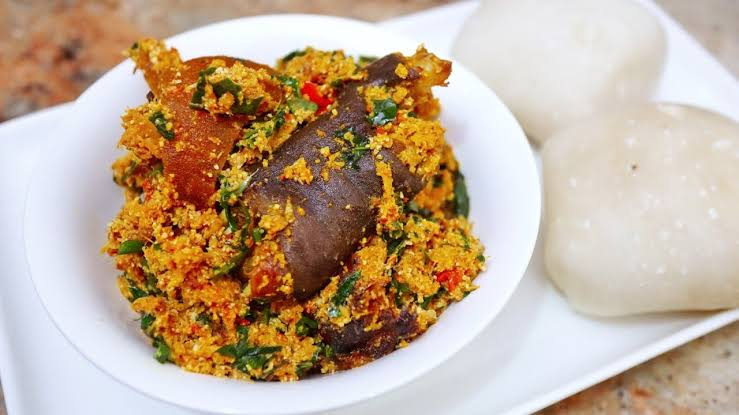

Egusi Soup

DESCRIPTION
Egusi soup is a native to West Africa, Nigeria precisely. It is a great soup for those who like
to try something different every once in a while. Grounded egusi seeds gice this soup
a unique color and flavor. Egusi is substituted with pumpkin seeds. When finished
egusi soup can be served with pounded yam or prepared semovita.
Nutrition Info:
- Prep: 15mins
- Cook: 1hr 20mins
- Total: 1hr 35mins
- Serving: 6
- Yield: 6 to 8 servings
INGREDIENTS
To prepare a sumptious egusi soup dish, you'll need the following ingredients
- 3/4 cup of pumpkin seed
- 1.5 pounds cubed beef stew meat
- 1/2 cup peanut oil
- 2 large tomatoes, chopped
- 1 small onion, chopped
- 2 habanero peppers, seeded and minced
- 18 ounces tomato sauce
- 3 tablespoons tomato paste
- 1.5 cups of water
- 2 pounds fresh shrimp, peeled and deveined
- 1 pound fresh spinach, washed and chopped
DIRECTIONS
You can carefully follow the steps below to prepare yourself a declicious egusi meal:
- Place pumpkin seeds in a blender and blend for 30 to 40 seconds until mixture is a powdery paste, set aside
- Wash beef and cut into bite-size cubes. Season with salt. In a large pot, heat il over medium - high heat for 4 to 5
minutes. Add beef and saute for 3 to 5 minutes or until brown but not cooked through
- Place tomatoes, onions, and pepper in a blender and blend for about 30 seconds or until smooth. Add tomato mixture
to meat, reduce heat to medium - low, and cover. Cook for 40 to 50 minutes or until meat is tender
- Add tomato sauce, water, and shrimp and simmer for 10 minutes
- Add spinach and ground pumpkin and continue to simmer for 10 minutes more
Nutritional Facts
Per serving: 758 calories; protein 60g; carbohydrates 16.9g; fat 51g;
cholesterol 306g; sodium 858.3g
Enjoy!
Homepage